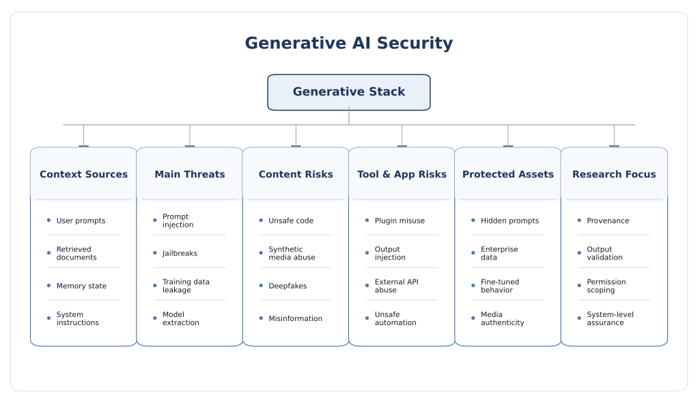

Generative AI Security
Generative AI security is no longer only about whether a model produces harmful text or images. It is about whether a model can be manipulated through prompts, retrieved data, multimodal inputs, memory, tools, plugins, fine-tuning data, or external software workflows, and whether its outputs can create downstream harm through misinformation, unsafe code, privacy leakage, or synthetic media abuse.
Why generative AI changes the security problem
Generative AI systems differ from classical predictive models in one central way: they do not simply assign labels, scores, or classes. They generate open-ended outputs such as language, code, images, video, audio, plans, and tool calls. That makes the attack surface fundamentally broader. The model is not only interpreting inputs; it is also shaping actions, content, interfaces, and sometimes decisions in downstream software systems.
This is why generative AI security should be understood across three coupled layers. First is the model layer: the base model, alignment procedures, safety tuning, and fine-tuning data. Second is the application layer: prompts, retrieval, orchestration logic, memory, plugins, and agents. Third is the content layer: the generated text, code, image, video, or audio that enters the world and influences users, systems, or public information flows. Secure deployment requires all three layers to be considered together.
What belongs under generative AI security
- Large Language Models (LLMs): chatbots, coding assistants, search assistants, document agents, copilots.
- Multimodal models: systems that jointly process text, image, audio, video, or sensor-rich inputs.
- Diffusion and image/video generators: text-to-image, image editing, style transfer, video synthesis.
- Tool-enabled applications: models that browse, execute code, call APIs, retrieve files, or modify systems.
- Retrieval-augmented systems: LLMs grounded on internal documents, knowledge bases, vector stores, or live web data.
- Enterprise wrappers: workflow automation, policy assistants, CRM copilots, support systems, and internal agents.
Why this matters now
The security problem has become more urgent because generative models are increasingly given real authority: they summarize inboxes, search internal documents, write code, query databases, evaluate resumes, generate product copy, call tools, and automate actions. As soon as the model influences high-value systems, security is no longer just a content moderation issue. It becomes a software assurance, privacy, and operational risk problem.
Core security objectives
- Instruction integrity: the system should follow trusted instructions rather than attacker-controlled context.
- Data confidentiality: prompts, secrets, documents, embeddings, and user data should not leak through generation.
- Action safety: model output should not directly trigger unsafe code, commands, transactions, or policy violations.
- Content authenticity: generated media should be traceable, attributable, and harder to misuse deceptively.
- Service resilience: the system should remain usable under abusive prompting, denial-of-service attempts, or extraction pressure.
- Governance and auditability: developers should be able to inspect traces, replay failures, and understand why the system acted.

Threat model and attack surface
A good threat model for generative AI must describe where the attacker enters the system, what content channels they can control, what privileges the model has, and what downstream effects are possible. A user who can only submit one prompt poses a very different risk from an attacker who can poison retrieval content, upload crafted images, influence fine-tuning data, or exploit a tool-enabled agent.
Attacker positions
- User-level attacker: interacts directly through prompts, files, images, or API calls.
- Indirect content attacker: plants malicious instructions in documents, websites, emails, code, issue trackers, or PDFs that the model later reads.
- Data-pipeline attacker: poisons pretraining, fine-tuning, instruction-tuning, or feedback data.
- Supply-chain attacker: compromises base checkpoints, adapters, tokenizers, datasets, plugins, packages, or vector stores.
- Privileged attacker: abuses logs, eval systems, moderation overrides, model settings, or deployment tooling.
- Media attacker: uses the model to generate deceptive, synthetic, or impersonating text, voice, image, or video.
Attacker goals
- Bypass: defeat safety filters or policy restrictions through jailbreaks and prompt manipulation.
- Leakage: extract hidden instructions, training examples, user data, secrets, or proprietary model behavior.
- Manipulation: bias outputs, alter recommendations, distort reasoning, or trigger unauthorized actions.
- Theft: steal model behavior, prompts, or commercial value through repeated querying or supply-chain compromise.
- Abuse: use the model to scale phishing, social engineering, malware development, deepfakes, or disinformation.
- Economic denial: inflate inference cost, exhaust tool budgets, or degrade availability through adversarial usage patterns.
A practical threat surface for generative systems
- Model layer: pretraining, alignment, fine-tuning, adapters, safety tuning, and hidden system prompts.
- Context layer: user prompts, retrieved documents, memory, conversation state, and external data sources.
- Action layer: tool calls, code execution, web browsing, API access, database queries, and side-effectful workflows.
- Content layer: generated text, code, images, video, audio, and their downstream users or automated consumers.
- Operations layer: model hosting, logging, permissions, policy enforcement, monitoring, and version control.
Major threat classes
1. Prompt injection and instruction hijacking
Prompt injection is one of the defining vulnerabilities of generative AI. The attacker crafts content so that the model interprets it as an instruction instead of as data. This can happen directly in the chat input or indirectly through external content later retrieved by the model. In agentic settings, successful prompt injection may redirect tool usage, reveal sensitive information, or manipulate workflow decisions.
- Direct injection: malicious instructions appear in the user’s own message.
- Indirect injection: malicious instructions are embedded in documents, webpages, emails, repositories, or knowledge bases.
- Instruction hierarchy failure: the system fails to preserve the intended priority of system, developer, and user constraints.
- Why it is hard: the same natural-language channel carries both legitimate data and adversarial instructions.
2. Jailbreaks and alignment bypass
Jailbreaks are attempts to make a generative model violate its intended safety behavior. The attacker may use role-play, multi-turn persuasion, adversarial suffixes, decomposition tricks, multilingual phrasing, encoded content, or multimodal combinations to induce disallowed output. The key issue is not only harmful content generation, but the broader failure of policy enforcement under adaptive prompting.
- Common targets include disallowed advice, harmful instructions, policy circumvention, or confidential system behavior.
- Attack success often depends on context length, refusal style, memory state, and the exact orchestration wrapper.
- Multimodal and agentic systems widen the jailbreak space because attacks can combine text, image, audio, or tool influence.
3. Sensitive information disclosure and training data leakage
Generative systems may reveal more than intended. Leakage can occur through memorized training content, hidden prompts, retrieved enterprise data, tool outputs, conversation memory, logs, or unsafe debugging behavior. The risk is especially important in enterprise deployments where the model is connected to internal documents or user-specific data.
- Prompt leakage: exposure of system prompts, developer instructions, or hidden workflow logic.
- Training-data extraction: eliciting memorized strings, proprietary passages, personal data, or credentials.
- Context leakage: revealing retrieved documents, chat history, tool outputs, or other users’ information.
- Embedding-layer exposure: sensitive knowledge can be indirectly surfaced through retrieval and ranking behavior.
4. Model extraction and functionality theft
Generative models offered through APIs can be economically attacked. Adversaries may collect outputs, analyze style or task behavior, infer hidden prompts, or build substitute models that replicate valuable system functionality. In language and image generation settings, even partial imitation may be commercially meaningful if it captures the application’s characteristic behavior or niche domain knowledge.
5. Training data poisoning and fine-tuning compromise
Generative systems are heavily shaped by the data used for pretraining, supervised fine-tuning, reinforcement learning, retrieval ingestion, and user feedback loops. An attacker who can influence those sources may implant backdoors, degrade safety, bias outputs, or insert behaviors that activate only under specific triggers. Fine-tuning on third-party or unvetted instruction data is a particularly important risk in enterprise settings.
- Safety degradation poisoning: weaken refusal behavior or content filters.
- Backdoor insertion: cause hidden triggered behavior under particular prompts, phrases, or visual cues.
- Preference poisoning: distort ranking, style, or response patterns through feedback manipulation.
- Retriever poisoning: inject hostile documents that bias the model once retrieved.
6. Insecure output handling
A major application-level mistake is to treat model output as trusted. Generated text may be passed into shells, interpreters, database queries, business logic, or web rendering layers. Generated code may look plausible yet contain security flaws, and generated structured data may contain adversarial payloads. In such cases, the real vulnerability is the interface between the model and deterministic software.
- Code generation can introduce insecure dependencies, unsafe defaults, or exploitable logic.
- Generated HTML, markdown, or JSON can become a vehicle for cross-system injection.
- Natural-language outputs can steer downstream humans toward unsafe operational decisions.
7. Excessive agency and unsafe tool use
The security risk grows sharply when models are allowed to act rather than only answer. If a generative system can send emails, modify files, open tickets, query databases, approve transactions, or browse sensitive systems, then prompt manipulation can become a real-world incident. The model may not need to be perfect to be useful, but it must be constrained so that mistakes and manipulations remain bounded.
- Tool permissions can exceed what the task actually requires.
- Long-horizon planning increases the chance of compounding mistakes.
- Hidden context or retrieved instructions can push the agent toward unauthorized actions.
- The blast radius depends on what external systems trust the agent to do automatically.
8. Multimodal attacks
Multimodal generative models introduce cross-modal attack opportunities. A malicious image can carry textual cues, hidden semantic triggers, or carefully designed overlays that influence a model’s interpretation. Likewise, audio, video frames, or OCR-extracted text can serve as attack carriers. The problem becomes more subtle because attacks may be partially hidden from a casual human observer while still shaping the model’s internal representation.
- Images can embed indirect instructions, adversarial patches, or hidden text for OCR-based pipelines.
- Cross-modal prompt injection can combine visual and textual cues to strengthen attack success.
- Safety filtering is harder because each modality may have different failure modes and blind spots.
9. Synthetic media misuse, impersonation, and information integrity
Text, voice, image, and video generation create risks beyond the application boundary. The generated artifact itself may be used for impersonation, fraud, reputation attacks, deepfakes, political manipulation, or misinformation at scale. This means generative AI security also includes provenance, traceability, detection, and abuse-response mechanisms for generated content in the wider ecosystem.
- Text abuse: phishing, impersonation, fake documents, persuasive fraud, and misinformation campaigns.
- Voice abuse: spoofed calls, identity fraud, and social engineering with cloned speech.
- Image/video abuse: deepfakes, fake evidence, impersonation, and manipulated media.
- Authenticity challenge: users need ways to assess provenance, edits, and generation history.
10. Denial of service and cost amplification
Generative AI is especially vulnerable to asymmetric cost attacks. Long prompts, recursive tool use, repeated complex requests, oversized file processing, or exploitative retrieval patterns can consume substantial compute while being cheap for the attacker to generate. Availability and cost control are therefore central security concerns, not merely operational details.
Countermeasures and secure design principles
The strongest generative-AI defenses are layered. No single prompt trick, filter, or model-side safeguard is sufficient on its own. Practical protection comes from combining model hardening, context isolation, permission control, output validation, provenance methods, continuous red-teaming, and incident response discipline.
1. Design around trust boundaries, not only around prompts
The first security question should be: which inputs are trusted, which are untrusted, and what can happen if the model gets manipulated? In robust designs, untrusted external content should not directly drive high-privilege behavior. Retrieved text, user messages, uploaded files, and web content should be treated as potentially adversarial even when they appear benign.
- Separate system instructions, developer policies, user requests, and retrieved content as distinct logical channels.
- Reduce hidden prompt complexity so the model has fewer ambiguous priorities to resolve.
- Use deterministic code to decide permissions, not model reasoning alone.
- Assume some prompt injection attempts will succeed and design the system so damage remains limited.
2. Constrain tool use and external actions
- Least privilege: every tool should have only the minimum permissions necessary.
- Action gating: require confirmation before sending, deleting, purchasing, modifying, or transmitting sensitive data.
- Allowlisting: limit commands, destinations, file paths, database operations, or network domains.
- Sandboxing: isolate code execution, browsing, and file handling from sensitive environments.
- Structured interfaces: prefer typed tool schemas and validated arguments over free-form instruction passing.
3. Context and retrieval isolation
- Retrieve only from authorized sources relevant to the current user and task.
- Attach provenance or trust labels to documents before they enter the context window.
- Scan indexed content for secrets, policy violations, malware, or suspicious hidden instructions.
- Use minimal context assembly instead of dumping large document sets into the prompt.
- Prefer field extraction and validated summaries when untrusted content must cross system boundaries.
This is especially important in enterprise RAG systems, where confidentiality and prompt injection risks often arise from the same document pipeline.
4. Output validation and downstream safety checks
- Treat every output as untrusted until checked by deterministic validators.
- Validate generated code, SQL, HTML, shell commands, and policy-sensitive text before use.
- Use schema-constrained outputs where downstream software expects structured data.
- Run policy filters and secret scanners on both intermediate and final outputs.
- For high-risk content, use a second-pass review model or human approval workflow.
5. Data and model governance
- Track provenance for training, fine-tuning, and feedback datasets.
- Screen for poisoning, trigger patterns, duplicated memorized data, and sensitive records.
- Document how base models were adapted, which safety layers were changed, and which benchmarks were used.
- Re-evaluate risk after every fine-tuning, adapter update, or prompt-policy change.
- Control who can modify prompts, tools, retrievers, vector stores, or model versions in production.
6. Privacy and leakage mitigation
- Minimize retention of prompts, outputs, and sensitive trace data.
- Use redaction, anonymization, and privacy-enhancing methods where appropriate.
- Reduce unnecessary output detail that could help extract model behavior or hidden content.
- Use canary tokens or seeded secrets to detect unexpected disclosure pathways.
- Audit logs, memory stores, and observability tools because leakage often happens outside the main response path.
7. Provenance, watermarking, and media authenticity
For generated media, defenders increasingly need methods that help users assess origin and editing history. Watermarking and content credentials are not complete solutions, but they can support attribution, transparency, and ecosystem-level trust when used carefully and combined with policy and platform measures.
- Attach provenance metadata or content credentials where workflows support it.
- Use robust watermarking selectively, understanding that many watermarking methods can be removed or degraded.
- Surface media origin information clearly in user interfaces rather than hiding it in backend logs.
- Combine provenance with abuse monitoring, takedown processes, and user education.
8. Continuous evaluation and red teaming
- Test direct and indirect prompt injection, jailbreaks, data exfiltration, and unsafe tool use.
- Include multilingual, multimodal, long-context, and multi-turn attack scenarios.
- Evaluate not only final answers but also traces, tool calls, intermediate plans, and side effects.
- Benchmark changes after model upgrades, prompt revisions, or retrieval updates.
- Use staged rollout, shadow testing, and limited blast radius for new deployments.
9. Human oversight where it matters
Human oversight is most valuable not as a blanket fallback, but at the points of highest consequence: external communication, financial action, policy-sensitive workflows, safety-critical content, and ambiguous authorization boundaries. The role of the human should be clearly defined so that overreliance on fluent but incorrect outputs does not quietly become a systemic weakness.
Open research challenges and future directions
Generative AI security is advancing quickly, but the field still lacks strong, shared assurance methods. Many defenses remain patch-like, evaluation is often incomplete, and deployment complexity keeps outrunning benchmark design. The next stage of the field needs deeper architectural thinking rather than only stronger filters.
1. Security is still evaluated too locally
Many studies test a model in isolation, yet real systems fail through interaction effects among prompts, retrievers, memory, tools, access control, and user interface decisions. Better end-to-end evaluation frameworks are needed for real products rather than standalone models.
2. Prompt injection is not just a filtering problem
Because instructions and data often share the same representational channel, prompt injection is partly architectural. Detection helps, but long-term progress will likely require stronger separation between untrusted content, task logic, and permissions for downstream action.
3. Multimodal security is still immature
Multimodal models introduce cross-modal attacks that are harder to benchmark and easier to miss. The community still lacks mature, widely adopted evaluation standards for image-based prompt injection, audio-triggered manipulation, and multimodal jailbreak transferability.
4. Provenance and watermarking remain incomplete
Watermarks can be fragile, provenance metadata can be stripped, and downstream platforms do not always preserve authenticity signals. A major challenge is building authenticity mechanisms that are both technically robust and usable across real content ecosystems.
5. Privacy risk measurement is still underdeveloped
We still do not have universally satisfying ways to measure memorization, extraction risk, or privacy exposure across text, code, image, audio, and multimodal models. The problem becomes harder when training data is proprietary and model internals are inaccessible.
6. Safety, utility, and autonomy are in tension
The more capable and autonomous a generative system becomes, the harder it is to preserve both usefulness and strict security guarantees. Strong restrictions can break product usability, while broad freedom increases abuse and manipulation risk. Better quantitative trade-off frameworks are needed.
7. Fine-tuning and open adaptation increase uncertainty
Base-model evaluations often do not transfer cleanly after instruction tuning, domain adaptation, LoRA updates, or third-party alignment changes. Security research needs stronger methods for tracking how safety properties drift after adaptation.
8. Generated code and reasoning remain over-trusted
Developers and users often overestimate the reliability of polished outputs. Future work must address not only model robustness, but also the socio-technical question of how humans calibrate trust in fluent, high-confidence generation.
9. Synthetic media abuse is an ecosystem problem
Deepfakes, impersonation, and misinformation cannot be solved at the model layer alone. Effective defense will require joint work on provenance, platform policy, user education, forensic detection, legal response, and standards for authenticity signaling.
10. Future direction
- Security-by-design architectures for LLM, multimodal, and diffusion-based applications.
- Formal trust boundaries for prompts, memory, retrieval, and tools.
- Better evaluation of long-context, multi-turn, and multi-agent failure modes.
- Benchmark suites for multimodal prompt injection and tool-enabled abuse.
- Robust provenance pipelines for generated media and edited content.
- Cross-layer research connecting generative AI security with cloud, edge, hardware, and physical deployment assumptions.
Selected readings and frameworks
The following references provide a strong starting point for readers who want both practical and research-oriented entry points into generative AI security.
- NIST AI 600-1: Generative AI Profile
- NIST AI 100-2: Adversarial Machine Learning Taxonomy and Terminology
- OWASP Top 10 for LLM Applications
- MITRE ATLAS
- Designing AI Agents to Resist Prompt Injection
- Safety in Building Agents
- C2PA: Content Provenance and Authenticity
- Training Data Extraction From Pre-trained Language Models
- A Survey on Model Extraction Attacks and Defenses for Large Language Models
- From LLMs to MLLMs to Agents: A Survey of Emerging Paradigms in Jailbreak Attacks and Defenses
- Jailbreak Attacks and Defenses against Multimodal Generative Models
- A Survey of Defenses against AI-generated Visual Media